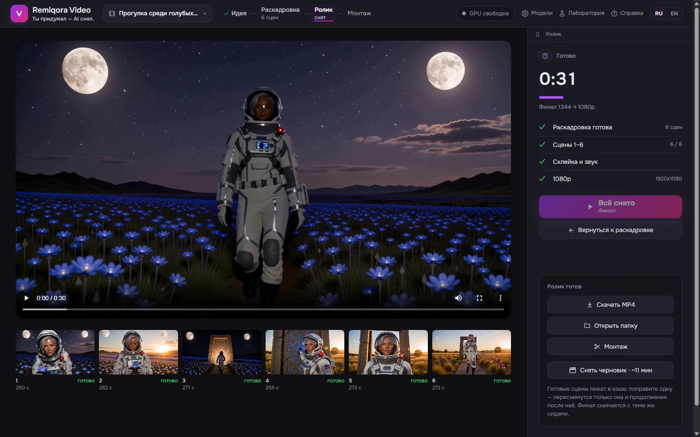
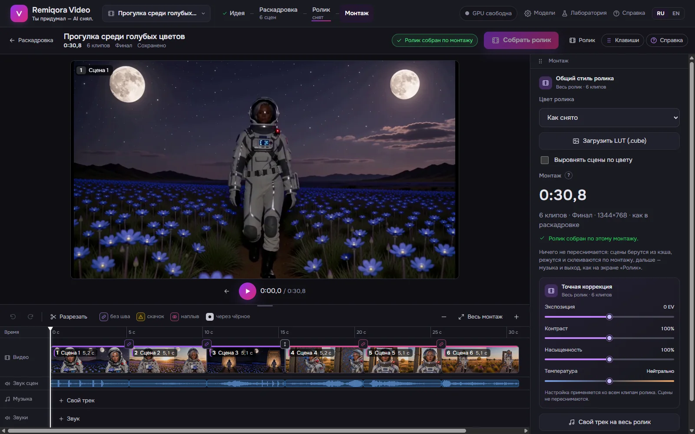
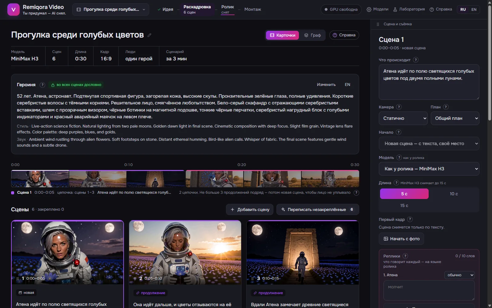
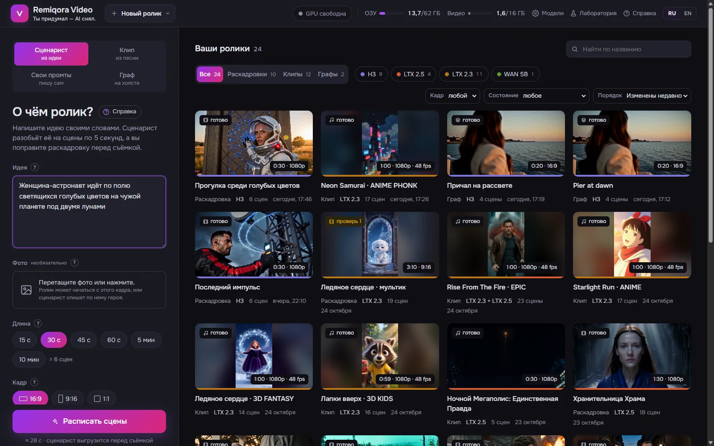
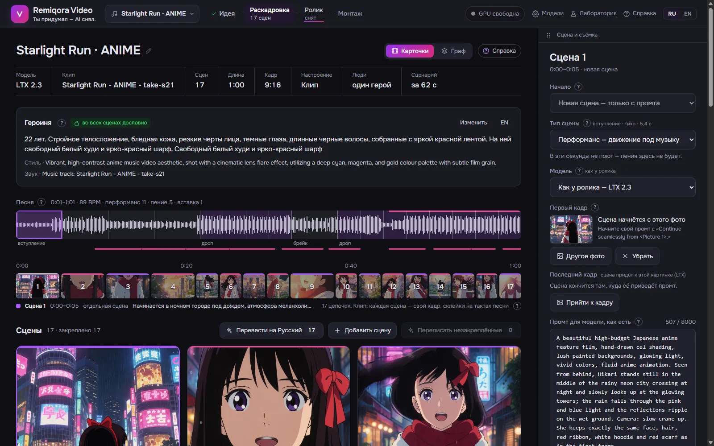
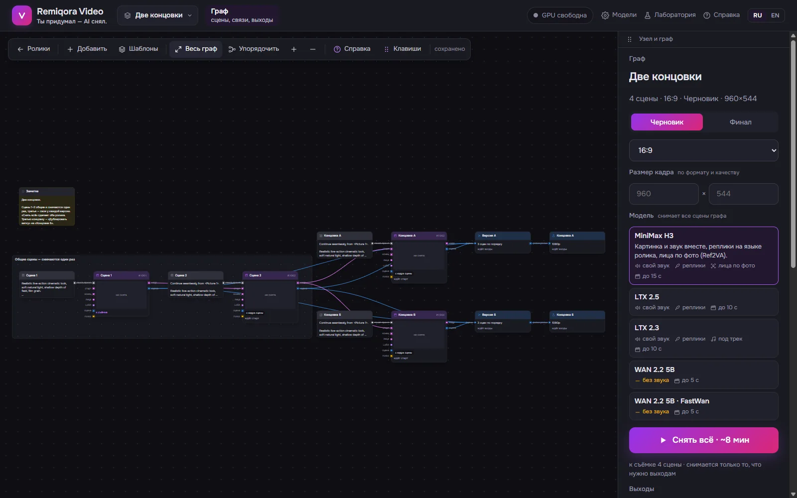
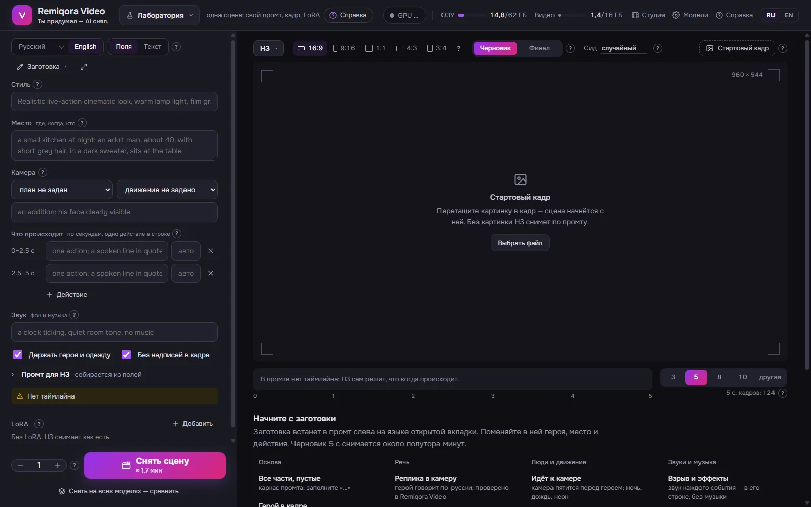
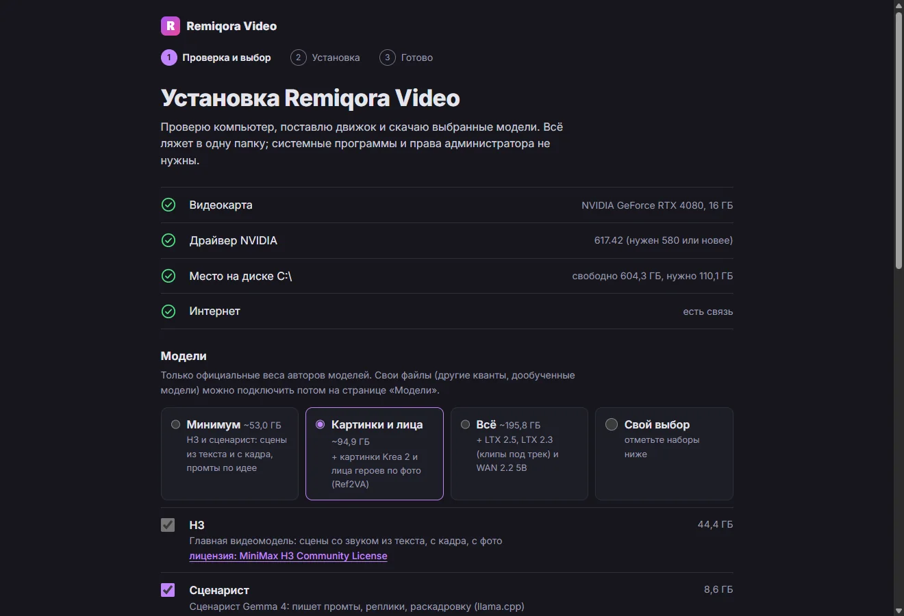
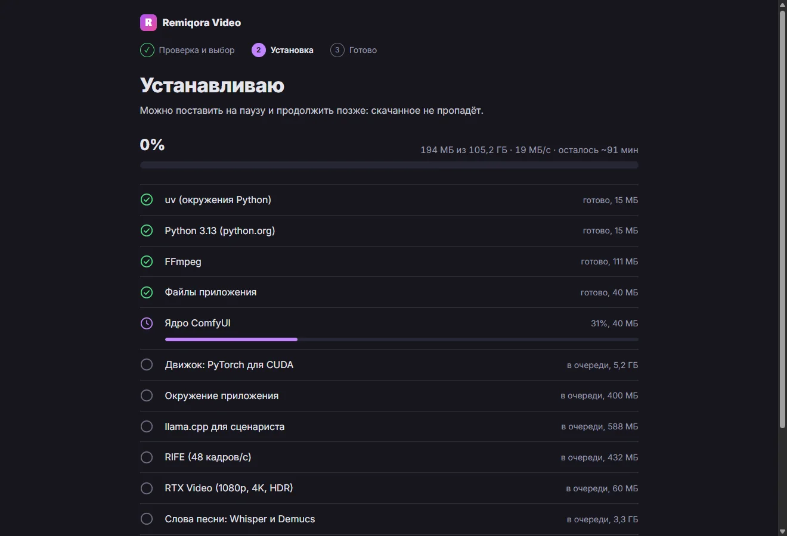

- Открытый код · Всё локально
- Новое: установщик в один клик · официальные модели
- Windows · NVIDIA RTX 16 ГБ
- Интерфейс: Русский · English
Remiqora Video. Ты придумал —
ИИ снял.
Remiqora Video превращает пару фраз в ролик. Локальная языковая модель пишет раскадровку, MiniMax H3, LTX 2.5 / 2.3 или WAN 2.2 снимают её сцена за сценой со звуком, приложение склеивает сцены, а вы монтируете их на таймлайне и выводите в 1080p, 4K или HDR10. Всё работает на вашем компьютере.
Скачать для WindowsОткрыть на GitHub
- Идея
- Раскадровка
- Съёмка
- Монтаж
- 4K / HDR



Что внутри
Идея
Пара фраз своими словами и по желанию фото — как первый кадр или только как внешность героя. Здесь выбираются модель, длина от 15 с до 10 мин, кадр (16:9, 9:16, 1:1) и кто в кадре. Сценарист читает и пишет на 17 языках; промты для видеомоделей всегда английские.

Экран идеи Раскадровка
Карточки сцен на таймлайне. Карточка героя держит лицо, одежду и голос слово в слово в каждой сцене; у сцены своя модель, длина, первый и последний кадр, LoRA. Сцену можно переписать, закрепить удачные или написать свои промты.
Раскадровка Ролик
Сцены снимаются цепочками: следующая начинается с последнего кадра предыдущей. Черновик на 30 с — около 10 минут на H3 и 3,5–4 на LTX. На выходе — как снято, 1080p / 4K через NVIDIA RTX Video, HDR10 или 48 кадров в секунду.
Ролик Монтаж
Обрезка, разрез, скорость 0,5–2×, дубли, переходы (вспышка, наплыв, через чёрное), звуковые дорожки, магнит по долям и единый цвет ролика или свой LUT. Выгрузка таймлайна в DaVinci Resolve — FCPXML вместе с файлами.
Монтаж Клип из песни
Песня за секунду разбирается на такты и части, Whisper записывает слова со временем. Сцены режутся по целым тактам; LTX 2.3 слышит свой кусок трека и поёт его.

Клип Граф
Холст из 18 видов узлов для того, чего не умеет раскадровка: две концовки от общих сцен, короткая и длинная версия, картинка от Krea 2 как первый кадр. 16 готовых шаблонов.

Граф Лаборатория
Одна сцена вручную: промт по полям или текстом, стартовый кадр, LoRA и любая модель. «Снять на всех моделях» сравнивает их на одном промте и сиде.

Лаборатория
Видеомодели
Устанавливаются только официальные веса — от авторов моделей или из их официальных перепаковок под ComfyUI. Подойдёт и любой файл того же устройства: другой квант, дообучение.
MiniMax H3
Лица и игра, лица по фото (Ref2VA). Свой звук и реплики на языке ролика. Сцены до 15 с.
LTX 2.5
Быстрые сцены со звуком, «прийти к кадру» по первому и последнему кадру. До 10 с.
LTX 2.3
Клипы: снимает под ваш трек, герои поют; голос героя по образцу. До 10 с.
WAN 2.2 5B
Только картинка, Apache-2.0; FastWan — за 8 шагов вместо 20. До 5 с.
Krea 2
Картинки: первый кадр сцены, певец для клипа, герой по описанию.
Сценарист
Gemma 4 E4B на llama.cpp пишет раскадровку, реплики и промты; подойдёт любая чат-модель в GGUF.
Некоторые модели, в том числе MiniMax H3, могут быть запрещены или ограничены в отдельных странах: убедитесь, что пользоваться моделью законно там, где вы живёте. У каждой модели своя лицензия, и видео подпадает под лицензию модели, которая его сделала.
Скачать
Один установщик для Windows. Ставится на пользователя, без прав администратора, проверяет видеокарту, драйвер и место, предлагает выбрать наборы моделей и сам скачивает движок и официальные веса — с паузой и докачкой.
Версия 0.1.0, пре-релиз. Все файлы и суммы SHA-256
- Около 53 ГБ на минимум (H3 и сценарист), около 196 ГБ на всё
- Уже скачанные веса ComfyUI подключаются папкой и не качаются заново
- Сертификата у установщика пока нет: Windows покажет предупреждение SmartScreen


Перед установкой
Что работает
- Windows 11 и видеокарта NVIDIA RTX с 16 ГБ видеопамяти (проверено на RTX 4080)
- После загрузок всё работает офлайн, ничего не отправляется
- Справка в приложении на русском и английском и та же справка в Wiki
- Свои LoRA, совместимые файлы моделей и любые GGUF-сценаристы
Ограничения
- Только Windows и NVIDIA
- Сценарист и видеомодель работают по очереди: модель загружается заново до полуминуты
- Лица по фото держит только H3; LTX и WAN держат лицо описанием и стартовым кадром
- В каждой сцене своя музыка: для одной мелодии положите свой трек
- Ранняя версия: возможны шероховатости
Из исходников
Для разработчиков: скрипты ставят те же официальные веса; сценаристу нужен LM Studio или сборка llama.cpp.
install.bat
git clone https://github.com/inikolax/remiqora-video
cd remiqora-video
install.batdev.bat
dev.batВопросы
Remiqora Video бесплатна?
Да. Код открыт под GPL-3.0, без аккаунта и ограничений. Всё работает на вашем железе, платите только за электричество.
Какое железо нужно?
Windows 11 и видеокарта NVIDIA RTX с 16 ГБ видеопамяти; проверено на RTX 4080. На диске — около 53 ГБ на минимум и около 196 ГБ на все модели.
Работает без интернета?
После разовой загрузки — да: сценарист, видеомодели, монтаж и финал работают на вашем компьютере.
Можно публиковать ролики?
Видео подпадает под лицензию модели, которая его сделала: MiniMax H3 Community License, LTX-2 Community License (бесплатно при выручке до $10 млн), WAN 2.2 — Apache-2.0. Проверяйте актуальные условия на странице модели и не создавайте видео с реальными людьми без их согласия.
Где документация?
В приложении: кнопка «Справка» и «?» у каждого поля, на русском и английском, плюс 15 сценариев по шагам. Та же справка есть в Wiki проекта.
Остались вопросы? Задайте их в issues.